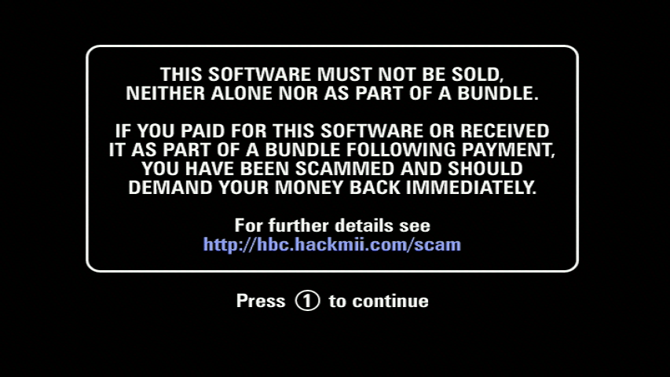
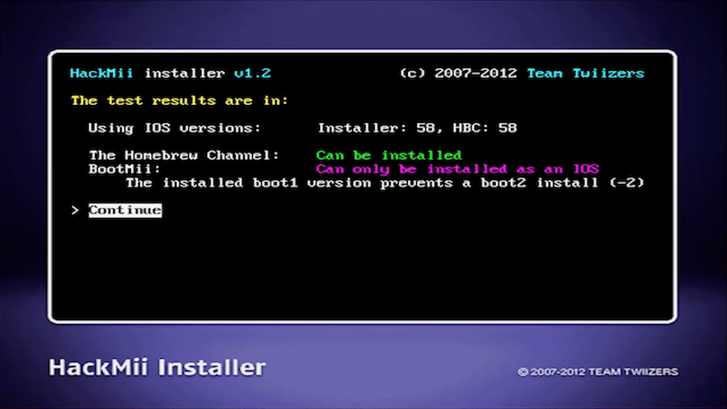
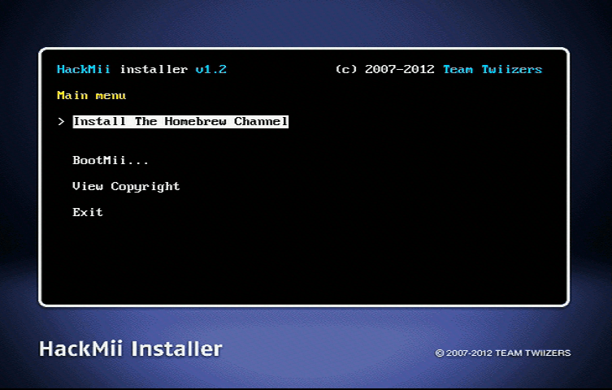
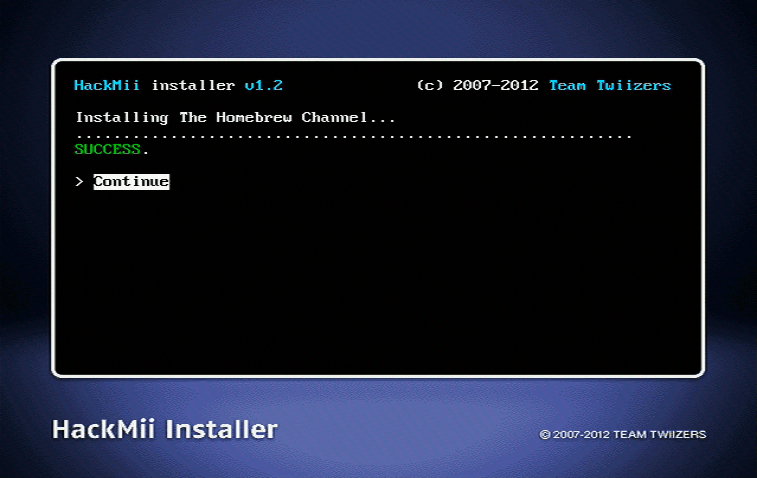
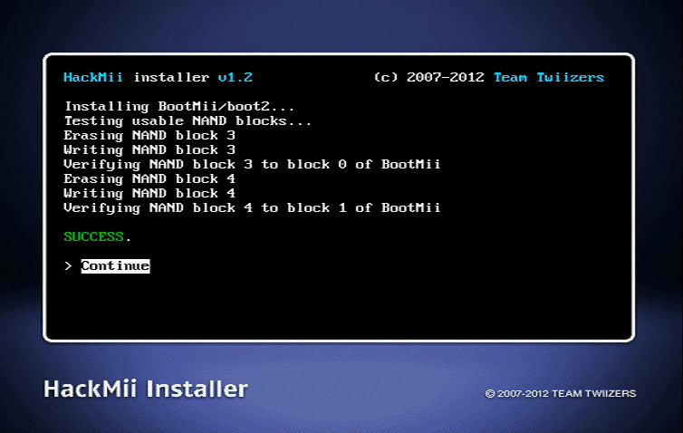

홈브루 채널과 BootMii 설치
튜토리얼에 관한 질문이 있다면, Wii Mini 해킹 디스코드 서버 에 가입하거나(권장) [email protected]에 이메일을 보내세요.
홈브루 채널은 당신이 홈브루 앱을 실행하는 곳입니다. BootMii는 Wii의 NAND 저장소를 백업하고 복원할 수 있는 소프트웨어이며, boot2에 설치되었을 때는, 벽돌 보호도 해 줍니다.
방법
-
당신은 사기 경고 화면을 보게 됩니다. “Press 1 to continue”가 나타날 때 까지 30초를 기다리고, 1번을 누르세요. 
-
HackMii 설치 마법사에서는 홈브루 채널과 BootMii를 설치할수 있습니다. 
-
Continue를 누르고, Install The Homebrew Channel을 선택합니다.
-
완료되면 Continue를 누르세요. 
- 설치되면 이전을 누르고 BootMii로 이동하세요.
- 만약 메인 화면이 boot2에 BootMii를 설치할 수 있다 하면, 하세요. 당신이 가질 수 있는 최고의 벽돌 보호를 얻는 기회입니다. Skip this step if the option doesn’t show up, in that case your Wii is not one of the earlier models that supports it.
- Install BootMii as IOS, even if you already installed BootMii as boot2 in the previous step. If you couldn’t install BootMii as boot2, this will still allow you to create a NAND backup.
If you do not have an SD card, you cannot install nor use BootMii, and therefore will not be able to utilize any of the mentioned benefits. 나중에 언제든지 설치가 가능합니다.

- 완료되면,
Continue를 선택하고Exit를 눌러 홈브루 채널로 이동하세요
Required Reading
You can now use the Homebrew Channel to launch homebrew apps. Open Shop Channel is a one-stop shop for downloading homebrew, which you will learn how to install further in this guide.
Here’s a tip - when installing homebrew applications on your SD Card or USB drive, your folder structure should look like this:
AppName1 and AppName2 are placeholder names. Do not nest multiple apps folders inside the apps folder itself.
┃ ┣ 📂 AppName1
If you couldn’t install BootMii, continue to installing Priiloader.
Tip: You can tell if a Wii has BootMii installed as boot2 if your disc drive flashes very briefly, only after the immediate flash that happens when you press the POWER Button.